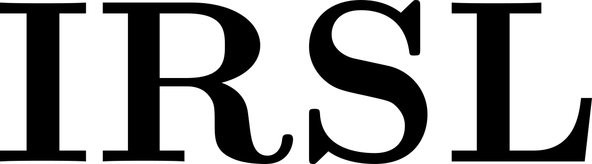
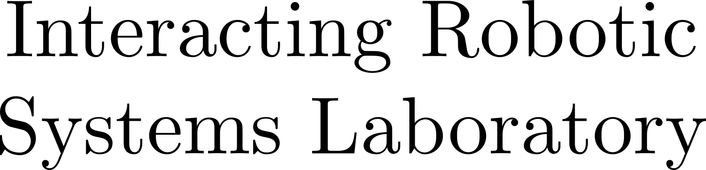

| Aditya Patankar | Khiem Phi | Dasharadhan Mahalingam |
| Nilanjan Chakraborty | IV Ramakrishnan |
| Stony Brook University |
Abstract:
In this paper, we study the problem of task-oriented grasp synthesis from partial point cloud data using an eye-in-hand camera configuration. In task-oriented grasp synthesis, a grasp has to be selected so that the object is not lost during manipulation, and it is also ensured that adequate force/moment can be applied to perform the task. We formalize the notion of a gross manipulation task as a constant screw motion (or a sequence of constant screw motions) to be applied to the object after grasping. Using this notion of task, and a corresponding grasp quality metric developed in our prior work, we use a neural network to approximate a function for predicting the grasp quality metric on a cuboid shape. We show that by using a bounding box obtained from the partial point cloud of an object, and the grasp quality metric mentioned above, we can generate a good grasping region on the bounding box that can be used to compute an antipodal grasp on the actual object. Our algorithm does not use any manually labelled data or grasping simulator, thus making it very efficient to implement and integrate with screw linear interpolation-based motion planners. We present simulation as well as experimental results showing the effectiveness of our approach.
Video Synopsis:
Overview of Algorithm:
Results on Simulated Data:


Paper:
Task-Oriented Grasping with Point Cloud Representation of Objects
Aditya Patankar, Khiem Phi, Dasharadhan Mahalingam, Nilanjan Chakraborty and IV Ramakrishnan
IEEE/RSJ International Conference on Intelligent Robots and Systems (IROS), Detroit 2023
Cite:
@inproceedings{patankar2023task,
title={Task-Oriented Grasping with Point Cloud Representation of Objects},
author={Patankar, Aditya and Phi, Khiem and Mahalingam, Dasharadhan and Chakraborty, Nilanjan and Ramakrishnan, IV},
booktitle={2023 IEEE/RSJ International Conference on Intelligent Robots and Systems (IROS)},
year = {2023}
organization={IEEE}
}
Code:
github.com/irsl-sbu/Task-Oriented-Grasping-from-Point-Cloud-Representation
Related Readings:
Computing a Task-Dependent Grasp Metric Using Second-Order Cone Programs
Amin Fakhari, Aditya Patankar, Jiayin Xie and Nilanjan Chakraborty
IEEE/RSJ International Conference on Intelligent Robots and Systems (IROS), 2021
Related Readings:
Motion and Force Planning for Manipulating Heavy Objects by Pivoting
Amin Fakhari, Aditya Patankar and Nilanjan Chakraborty
IEEE/RSJ International Conference on Intelligent Robots and Systems (IROS), 2021
Related Readings:
Human-Guided Planning for Complex Manipulation Tasks Using the Screw Geometry of Motion
Dasharadhan Mahalingam and Nilanjan Chakraborty
International Conference on Robotics and Automation (ICRA), 2023